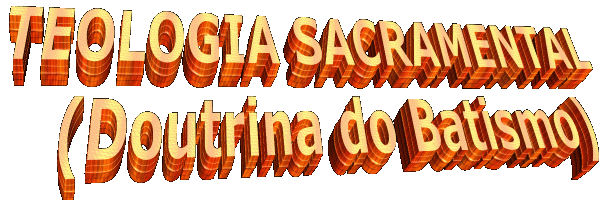
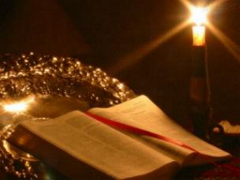
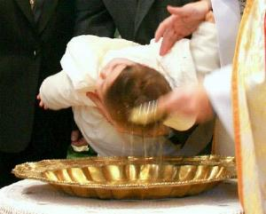
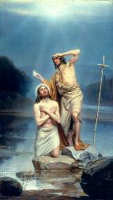
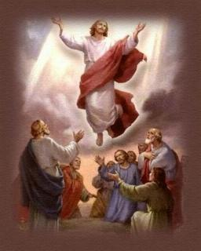
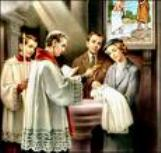

O Sacramento do Batismo foi instituído
por Jesus com o objetivo de santificar a vida 
“Toda autoridade sobre o Céu e sobre a Terra me foi entregue. Ide, portanto, e fazei que todas as nações se tornem discípulos, batizando-as em nome do Pai, do Filho e do Espírito Santo, e ensinando-as a observar tudo quanto vos ordenei. E eis que Eu estou convosco todos os dias até a consumação dos séculos!” (Mt 28, 18-20)
Normalmente o Batizado é realizado na Igreja. E quem Batiza são os Sacerdotes, Diáconos e Ministros credenciados.
Quanto à maneira de Batizar, Jesus mandou que Batismo fosse feito do mesmo modo que João Batista fazia, quando realizava um “Batismo de Penitência” no Rio Jordão, preparando o povo para que recebessem dignamente o Messias. Da mesma maneira que no Batismo de Penitência, no Sacramento do Batismo tem “Matéria” e “Forma”.
A “Matéria” é a Água utilizada na Cerimônia, que pode estar num rio, numa fonte, numa piscina, numa banheira ou dentro de uma jarra. Jesus escolheu a Água, porque ela é o símbolo da vida, ninguém vive sem ela.
A “Forma” são as palavras ditas no momento da celebração.
O rito central do Batismo vem da palavra grega “Baptizein”, que traduzida para o português significa “imersão”. Antigamente a maneira de Batizar era por “imersão” realizada num rio ou numa piscina. Com o passar dos anos, pelo desconforto que ocasionava, a Igreja instituiu a “Infusão” com Água, ou seja, o derramamento de Água na cabeça do batizando, pronunciando a “Forma”: “Eu te Batizo em nome do Pai, (derrama uma porção de água na cabeça do batizando) do Filho (derrama uma segunda porção de água) e do Espírito Santo" (derrama outra porção de água).
Mas porque Batizamos nossos filhos? Qual a finalidade do Batismo? Será que é para nossos filhos não serem “azarados” ou para não “pegarem mal olhado”? Ou porque é bonito! Ou porque todo mundo batiza, e por isso, nós vamos batizar também!
Evidentemente este não pode e não deve ser os motivos para Batizarmos os nossos filhos .

Por todas essas razões, devemos ter pressa em Batizar os nossos filhos, para que eles recebam estas preciosas graças que o Senhor nos concede através do Sacramento.
Por outro lado, é fácil compreender que o Batismo é um “Sinal”, pelo qual demonstramos querer que os nossos filhos e afilhados, sejam realmente de Deus. Assim sendo, através do Sacramento do Batismo, a humanidade faz uma “Aliança” com o Criador. Ele é o parceiro perfeito, porque sempre cumpre integralmente a sua parte. O Sacramento nos oferece meios e nos predispõe a cumprirmos também a nossa parte, estimulando-nos a assumirmos os deveres e obrigações de cristãos e sermos de fato aqueles “Filhos de Deus”, que o Senhor gostaria que fôssemos.
Esta é a resposta correta que deve ser dada a quem fizer a pergunta: porque Batizamos os nossos filhos?
São João em seu Evangelho, transcreve outras palavras de Jesus: “Eu sou a verdadeira vide e o meu Pai é o agricultor. Todo ramo em Mim que não produz fruto, Ele o corta, e todo o que produz fruto Ele o poda, para que produza mais fruto ainda.” (Jo 15, 1-2)

Contudo, aquele “ramo” que não produz fruto, o Criador o “corta”, ou seja, deixa-o entregue a sua própria sorte, até que um dia ele compreenda o seu desacerto e decida buscar um caminho de conversão.
Quando afirmei que o Sacramento do Batismo perdoa todos os pecados cometidos até aquele dia, coloquei em evidência o Batismo de Adultos, porque a criança ainda não cometeu pecado. Todavia, para Batizar um Adulto, é necessário que ele seja preparado convenientemente, conheça a Doutrina e compreenda a Verdade Cristã, a fim de que possa receber o Sacramento e ter plena consciência do valor e utilidade do mesmo.
Desse modo, conforme já mencionamos anteriormente, o Adulto deve ser preparado através de uma catequese eficiente, para receber no mesmo dia o Sacramento do Batismo, depois o Sacramento da Crisma ou Confirmação e logo a seguir, na mesma cerimônia, a Primeira Eucaristia, sem a necessidade de se confessar com um sacerdote, porque sendo Batizado recebe a graça do perdão de todos os seus pecados cometidos.
Poderá também receber qualquer outro Sacramento, se tiver sido preparado para recebê-lo.
Os Sacramentos instituídos por Jesus para a nossa santificação através do Espírito Santo, são sete (7): Batismo, Crisma ou Confirmação, Confissão ou Penitência, Eucaristia ou Sagrada Comunhão, Unção dos Enfermos, Ordem e Matrimônio ou Casamento.
O Batismo é o primeiro dos Sacramentos da Iniciação Cristã, somente depois de recebê-lo é que as pessoas poderão receber os outros Sacramentos.
O Batismo também neutraliza o efeito nefasto do Pecado Original ou Primeiro Pecado. Mas que Pecado é esse"
Foi o Pecado cometido pelos nossos primeiros pais, Adão e Eva.

Entretanto, o demônio sempre a espreita de uma oportunidade para querer interferir no Plano de Deus, sob a forma de uma serpente tentou Eva, dizendo-lhe que ela não ia morrer, que se comesse daquele fruto seria como deuses, conhecedores do bem e do mal. Eva iludida pela tentação fraquejou e aceitou o fruto da árvore proibida comendo um pedaço. Gostou! Ofereceu a Adão que também comeu do fruto. Estava concretizado o Primeiro Pecado, também chamado: Pecado Original. Na realidade, o Pecado Original além de ter sido um Pecado de Desobediência, foi também um Pecado de Soberba, porque Adão e Eva além de desobedecerem à ordem do Criador, enfeitiçados pela tentação diabólica quiseram ser como “deuses”.
E por ter sido uma ofensa direta contra Deus, teve reflexo infinito, porque o Criador é infinito. Assim, todas as gerações que nasceram e continuam nascendo trazem a maldita chancela, o estigma hereditário do Primeiro Pecado ou Pecado Original.
Todavia, como Deus sabia que ia acontecer a tentação e que nossos primeiros pais, apesar de estarem revestidos de graças especiais, acolheriam inocentemente a trama de satanás, projetou enviar o seu próprio Filho, a Segunda Pessoa da Santíssima Trindade, para Salvar e Redimir a humanidade por causa do Primeiro Pecado e dos Pecados Subsequentes que foram cometidos.
E assim aconteceu, na plenitude dos tempos, pela ação do Espírito Santo, Jesus nasceu da Virgem Maria entre nós, no meio do povo que Ele veio Salvar e Redimir. E cumpriu maravilhosamente a sua Divina Missão, derramando o seu sagrado e precioso sangue no alto de um madeiro, neutralizando o poder do Pecado Original, Redimindo e Salvando todas as gerações, e consolando o Criador, além de deixar-nos os seus ensinamentos, o seu exemplo maravilhoso de Homem, deixar-nos os Sacramentos para santificar a humanidade e também, deixar-nos Maria sua Mãe, para ser a Mãe Espiritual de todos nós, nossa intercessora e advogada de todas as causas junto de Deus.
Depois da vinda de
Jesus as pessoas continuam nascendo e da mesma forma, trazem 
Por outro lado, na cerimônia do Batizado, no momento em que o celebrante derrama Água na cabecinha do batizando, o Divino Espírito Santo coloca no coração do candidato a semente da Fé que ele deve ter em Jesus e na Santíssima Trindade que o inventou e criou.
Todavia, a “Fé” embora sendo uma força invisível e poderosa, ela requer atenção, precisa ser cuidada e alimentada diligentemente, caso contrário irá se enfraquecendo e até desaparecer totalmente.
Mas como cuidar da “Fé”?
Alimentando-a com leituras Bíblicas, com livros sobre a Vida dos Santos, através das Orações diárias, das Santas Missas, jejuns e penitências que forem realizados ao longo da existência, acompanhados de uma dedicada frequência aos Sacramentos.
E também é importante realçar, que o Sacramento do Batismo não depende da “santidade” e nem da “fé” do celebrante que dirige a cerimônia, mas primordialmente da sua “intenção”, em querer Batizar as pessoas (Crianças e Adultos).
A Igreja aceita ainda três tipos especiais de Batismo: Batismo de Emergência, Batismo de Desejo e Batismo de Sangue.
BATISMO DE
EMERGÊNCIA – É aquele ministrado durante uma
emergência. Para ficar bem explícito, vamos exemplificar:
Imaginemos que o filho de um casal ao nascer, apresentou um problema sério de
saúde. Então, os pais vão a procura de um sacerdote ou um diácono para Batizar a
criança, porque de acordo com o diagnóstico médico, ela tinha uma pequena chance
de viver. Mas os Pais não encontraram ninguém para Batizar o filho. Neste caso,
se você estiver presente ao acontecimento, deverá Batizar a criança. O procedimento
é simples: os pais escolhem um nome para a criança e da mesma maneira, escolhem os
Padrinhos entre as pessoas que ali se encontrarem, ou poderão também escolher
como Padrinhos, um Santo ou uma Santa da devoção deles. Com um copo de água
filtrada e uma pequena mecha de algodão poderão realizar a cerimônia, molhando o
algodão na água e colocando-o de leve na cabeça da criança por três vezes,
dizendo a “Forma”: “José ou Maria, eu te Batizo em nome do PAI
(coloca o algodão molhado na cabeça da criança), do FILHO (coloca o algodão
molhado outra vez) e do ESPÍRITO SANTO"
(coloca-o pela terceira vez). A criança está Batizada. Se ela
morrer, sua alma vai certinha para os carinhosos braços de Deus.
Entretanto, pode acontecer que ela não morra, porque a Misericórdia do Senhor é muito grande e Ele pode decidir, através daquele Batismo de Emergência, restituir a saúde à criança.
E agora, o que fazer? A criança está Batizada, embora não foi Batizada na Igreja e nem o celebrante foi um sacerdote, ou Diácono ou um Ministro credenciado! Como legalizar esta situação?
Os pais deverão ir a Igreja e contar a ocorrência ao Padre. Ele autorizará que num domingo de Batizados na Igreja, a criança seja submetida à parte Complementar do Batismo (liturgia da palavra, unção com óleo dos catecúmenos, veste branca, vela acesa), para que o nome dela seja inserido no Livro de Registro de Batizados da Paróquia. No futuro, quando a criança tornar-se jovem e necessitar de uma Certidão de Batismo para o Casamento, a Igreja terá condições de fornecê-la.
BATISMO DE DESEJO – Voltando ao exemplo anterior, em que a criança recém nascida estava com um grave problema de saúde, e que os pais procuraram exaustivamente e não encontraram um sacerdote, um diácono ou um ministro credenciado para batizá-la e também, não havia ninguém que soubesse nada a respeito do Batismo de Emergência! Isto resultaria que a criança ia morrer sem ser Batizada.
Nestes casos, a Misericórdia Divina atua em plenitude, porque Deus conhecendo todos os corações, sabe que existiu de fato, o “desejo” e a “intenção” dos pais em Batizar a criança. Eles procuraram exaustivamente um celebrante e não encontraram. Então, pela Bondade incomensurável do Senhor, concretiza-se o “Batismo de Desejo”. A criança morrendo, a sua alma com certeza, irá para o Céu.
BATISMO DE SANGUE – Acontecia com frequência no início do Cristianismo. Naquela época, aqueles que se preparavam para serem Batizados, chamados de Catecúmenos, frequentavam a Comunidade Cristã durante três anos de preparação. Eram adultos que assumiam a responsabilidade Batismal. A partir do ano 64, Nero, um terrível Imperador Romano, querendo conseguir espaço para fazer novas construções grandiosas em Roma e também, para se inspirar e escrever um poema épico, mandou incendiar diversos casarões no centro de Roma. Como existiam muitas casas de madeira, o fogo alastrou-se com violência e destruiu quatro, dos quatorze bairros que a cidade possuía, matando muita gente e deixando milhares de pessoas completamente desprotegidas. Diante da catástrofe, ele se acovardou, ficou apavorado e com medo. Junto com seus comparsas decidiram arranjar um “bode expiatório” para ficar com a culpa do incêndio. Colocaram a culpa nos cristãos. Então, iniciou uma cruel e abominável perseguição prendendo homens, mulheres, velhos, jovens e crianças. Não poupavam ninguém. Iam todos para as prisões romanas. Do cárcere eram levados para o Coliseu Romano e para Circo de Calígula, onde eram estraçalhados na arena pelos leões famintos, também crucificados impiedosamente, enquanto outros amarrados em postes de madeira tinham o corpo impregnado de betumem, eram incendiados, transformando-se em tochas vivas para iluminar a devassidão da corte imperial. Morriam derramando o sangue pela causa de Cristo. Eram verdadeiros “Mártires”! Por isso dizemos que acontecia um “Batismo de Sangue”. Embora fossem catecúmenos, ou seja, ainda não tivessem recebido o Sacramento do Batismo, como derramaram o seu sangue crendo em Deus, foram para o Céu, como verdadeiros “Santos”.